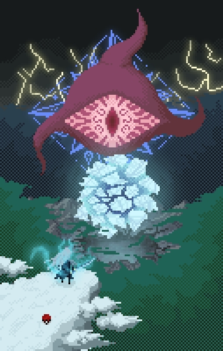

KACIMI HARIS
en cours d'apprentissage
A propos de moi
Bonjour ou bonsoir, je me nomme Haris mais c’est TiBronze sur les réseaux
( une histoire de bronze sur League of Legends), j’ai pour projet de devenir
web developper.
Je ne suis qu’un débutant pour l’instant et ceci est le tout premier projet perso
en web donc on verra bien ou il me mènera.
Comme on peut le remarquer avec le pixel art à côté et la bannière du dessus
je suis un grand fan de pixel art et j’en crée depuis le collège ,
au fil des années je m’améliore mais c’est depuis 4 ans que j’en
fais plus sérieusement .
mon Parcours
12/2022 - 07/2023 : Service civique à l’association Défis Lanester.
Durant ce cervice civique j’ai travaillé à l’association Défis en tant
que réparateur informatique et en HelpDesk.
Ce cervice civique m’a vraiment aidé car j’ai pu commencer à m’intéresser à la programmation
plus sérieusement sur les temps libres et le travail était vraiment intéréssant.
Mes missions
étaient de tester des pc (fixes ou portables) et de les réparer si besoin est, les passer sous
une version personnalisée de Linux mint, d’accueillir les clients et de les conseiller et de
répondre aux appels des adhérents pour régler leur différents soucis techniques sur leur
ordinateur en prise en main à distance .
2018-2021 : Bachelor Game Design & Creative Coding à E-artsup Lyon.
Cette école m’a permis d’apprendre a créer un jeu de A à Z et de me faire des contacts
dans l’industrie du jeu vidéo.
Durant la deuxième année je me suis focalisé sur le côté artistique en faisant principalement
du pixel art ou de la 3D suivant les projets et un peu de Sound Design si nous en avion besoin.
Même si je n’ai pas poursuivi dans l’industrie du jeu vidéo je continue de faire du pixel
art pour des petits projets d’amis ou de les aiser s’ils en ont besoin.
2018 Baccalauréat Scientifique.
Portfolio
Quelques pixel art que j'ai réalisés durant mes études pour différents projets ou durant mon temps libre


- 
Dans l'ordre, les six premiers dessins ont été faits en octobre 2023 pour l'inktober qui a été nommé l'Octobit pour le pixel art.
ensuite on a quelques dessins que j'ai fait soit pour moi-même ou encore d'autre pour des petits concours tel que la machine d'arcade qui est un fan-art pour un NFT.
Pour finir les 5 canards et les 5 landscapes de fin sont les 2 des séries de NFT que j'ai créé entièrement, les canards n'ont pas été sortis car je n'ai pas trouvé de collègue avec qui la sortir à l'époque
et pour les landscapes la collection NFT est sortie ave un ami qui s'y connaissais mieux que moi dans les NFTs.